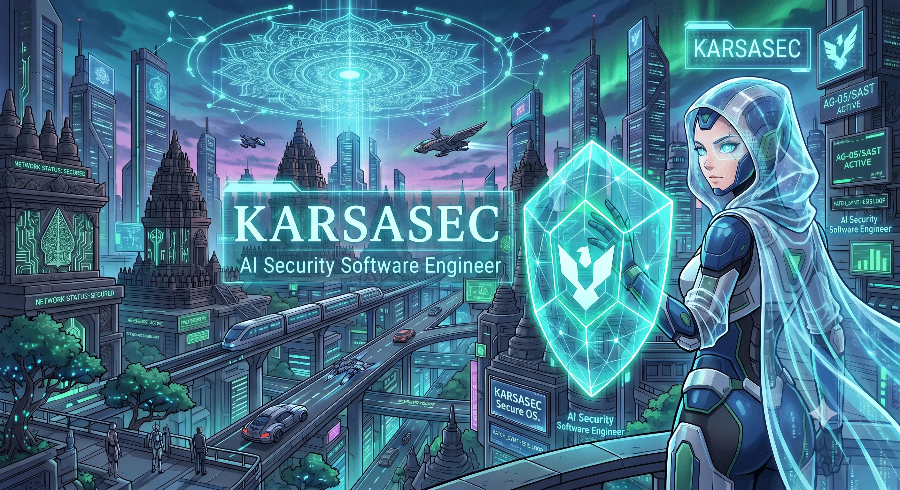

KarsaSec adalah Application Security Operating System (SecOS) generasi baru yang mengombinasikan Analisis AST Deterministik, Invarian L7 (Zero-LLM Authority), dan 5-Step Chain-of-Remediation (CoR) untuk mengamankan repositori secara presisi.

AI hanya berstatus proposal-only. Status `VERIFIED_FIXED` HANYA dapat diterbitkan via rescan deterministik SAST receipt (`RTPReceipt`).
Alur kerja remediasi ketat: Evidence Extraction → Strategy Matching → Minimal Hunk Generation → Anti-Hallucination Check → Rescan Verification.
Dukungan opsi `--create-branch` untuk mengekspor proposal perbaikan secara terisolasi ke cabang Git `fix/karsasec-finding-
Kombinasi pencarian teks BM25 dan Model2Vec embedding lokal untuk menemukan konteks kode & pola remediasi terbaik tanpa dependensi cloud.
Gerbang keamanan ketat E15/E16 yang akan memblokir rilis secara otomatis jika ditemukan bukti ketidakpastian atau percobaan bypass.
Tampilan perbedaan kode (*diff*) bergaya GitHub dengan warna `-` merah dan `+` hijau langsung di terminal konsol Anda.